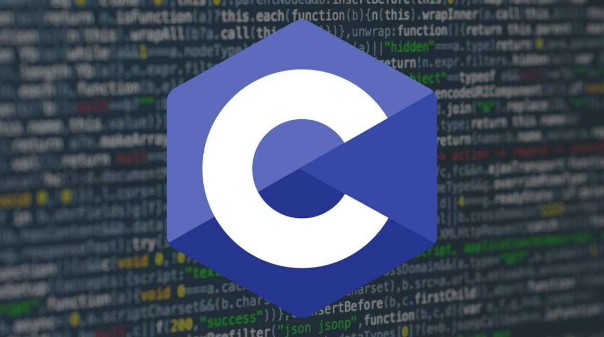
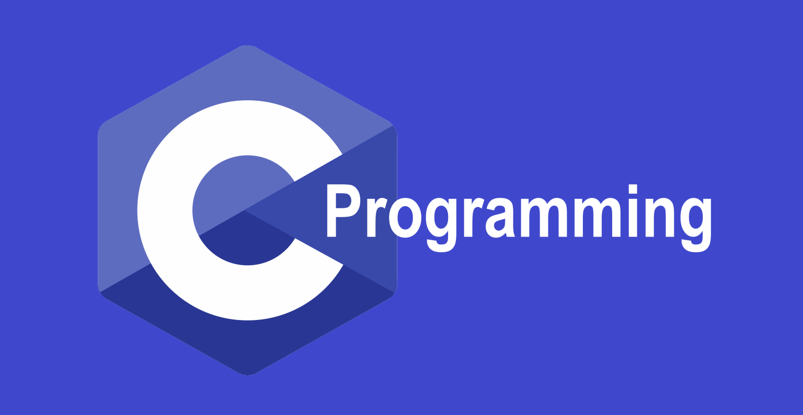

ИНДИВИДУАЛЬНЫЙ ИТОГОВЫЙ ПРОЕКТ
на тему «История языка программирования Си»
по предмету «информатика»
Введение
На современном этапе развития компьютерных технологий невозможно представить какого-либо
высококвалифицированного специалиста, не владеющего информационными навыками, поскольку деятельность любого
субъекта в значительной степени зависит от уровня владения информации, а также способности эффективно ее
использовать. Для свободной ориентации в информационных потоках современный специалист любого профиля должен
уметь получать, обрабатывать и использовать информацию, прежде всего, с помощью компьютеров, а также
телекоммуникаций и других новейших средств связи, в том числе и уметь обращаться с языками программирования.
С развитием мира и появлением компьютерной техники возникла потребность в создании языков, помогающих развитию
программирования.
Я хочу в своей работе рассказать об истории языка программирования Си
Актуальность - На сегодняшний день жизнь человека невозможна без компьютерной техники. Современные гаджеты не
способны выполнять свою функцию без заложенных в них программ, написанных на специальном языке.
Объект исследования – история программирования языка Си.
Цель исследования - выяснить, историю создания языка программирования Си
Гипотеза - я предполагаю, что с усовершенствованием старых и созданием новых языков программирования людям стало
легче работать, а программирование стало не таким сложным.
Вид проекта по содержанию – информационно - исследовательский
Вид проекта по комплектности – межпредметный.
Методы исследования: Работа с научной литературой и интернет ресурсами. Систематизация найденных сведений об
информационных технологиях.
Продукты проекта: материалы работы, сайт
История Си
Язык Си восходит корнями к языку ALGOL (расшифровывается как
ALGorithmic Language), который был создан в 1958 году совместно с комитетом Европейских и Американских учёных в
сфере компьютерных наук на встрече в 1958 в Швейцарской высшей технической школе Цюриха. Язык был ответом на
некоторые недостатки языка FORTRAN и попыткой их исправить.
Вдохновлённые языком ALGOL-60, Математическая лаборатория Кембриджского Университета совместно с Компьютерным
отделом Лондонского университета создали в 1963 году язык CPL (Combined Programming Language).
Язык CPL посчитали сложным, и в ответ на это Мартином Ричардсоном был создан в 1966 году язык BCPL, основное
предназначение которого заключалось в написании компиляторов. Сейчас он практически не используется, но в своё
время из-за хорошей портируемости он играл важную роль.
BCPL послужил предком для языка Би, разработанного в 1969 в уже знакомой всем AT&T Bell Telephone Laboratories,
не менее знакомыми Кеном Томпсоном и Денсом Ритчи.
Язык Би был использован для написания самых ранних версий UNIX, созданной как ответ на проект Multics,
разрабатываемый всё в той же Bell Laboratories. Именно этот язык послужил непосредственным предшественником
языка Си.
Язык программирования Си приобрёл огромную популярность во всём мире и оказал значительное влияние на многие
другие языки программирования. Именно он является предшественником таких языков, как C++, C#, Java; менее
известных (например J#). Компания Microsoft для разработки родного языка к своей платформе .Net выбрала именно
Си-подобный синтаксис. Что ни говори, но язык Си серьезно изменил жизнь программистов прошлого века и стал
де-факто в области низкоуровневого программирования, оставив ассемблеру только те места, где производительность
имела критическое значение.
Причины разработки Си
Существует несколько легенд, касающихся причин разработки Си и его отношения к операционной системе UNIX,
включая следующие:
По одной легенде разработка Си стала результатом того, что его будущие авторы любили компьютерную игру, подобную
популярной игре Asteroids (Астероиды). Они уже давно играли в неё на главном сервере компании, который был
недостаточно мощным и должен был обслуживать около ста пользователей. Томпсон и Ритчи посчитали, что им не
хватает контроля над космическим кораблём для того, чтобы избегать столкновений с некоторыми камнями. Поэтому
они решили перенести игру на свободный PDP-7, стоящий в офисе. Однако этот компьютер не имел операционной
системы, что заставило их её написать. В конце концов, они решили перенести эту операционную систему ещё и на
офисный PDP-11, что было очень тяжело, потому что её код был целиком написан на ассемблере. Было вынесено
предложение использовать какой-нибудь высокоуровневый портируемый язык, чтобы можно было легко переносить ОС с
одного компьютера на другой. Язык Би, который они хотели сначала задействовать для этого, оказался лишён
функциональности, способной использовать новые возможности PDP-11. Поэтому они и остановились на разработке
языка Си.
Существует и другая легенда. Первый компьютер, для которого была первоначально написана UNIX, предназначался для
создания системы автоматического заполнения документов. Первая версия UNIX была написана на ассемблере. Позднее
для того, чтобы переписать эту операционную систему, был разработан язык Си.
Где используется Си
1.Операционные системы:
Язык C первоначально создавался для системного программирования,
поэтому не удивительно, что его так активно применяют при создании операционных систем и программного
обеспечения.
Быстрый и энергоэффективный, он достаточно близок к аппаратному слою, что позволяет работать с кодом низкого
уровня.
Вот почему он идеален для разработки операционных систем.
Любая операционная система в первую очередь должна быстро запускаться и эффективно управлять системными
ресурсами. Например, Linux, Microsoft Windows, Mac OS полностью написаны на языке C, а Android и iOS — частично.
Разработчик на языке C может реализовывать все структуры данных самостоятельно, производя тонкую настройку
мельчайших деталей операционной системы. Такая высокая гибкость — весомый аргумент в пользу языка.
В отличие от других языков программирования, язык C не имеет зависимостей времени исполнения. Это означает, что
программа может выполняться силами аппаратных средств без участия менеджера памяти, входного или выходного слоя.
2. Программирование встроенных систем:
Язык программирования C просто необходим при проектировании встроенных систем.
Почему?
Главным образом из-за высокой производительности и простоты использования. Язык C очень экономичен в потреблении
ресурсов системы, благодаря чему программа выполняется быстро. В результате встроенные системы работают в
реальном времени без замедления.
Ещё важнее здесь — код на C, будучи платформенно-независимым, не связан с каким-либо конкретным микропроцессором
или системой. Так что встроенную программу можно скомпилировать в разных устройствах и платформах с
незначительными изменениями или вовсе без них.
Вот почему беспилотные автомобили, умные часы, сенсоры и устройства, использующие технологию Интернета вещей
(например, кофемашины), имеют встроенное ПО, целиком написанное на C или C++. В связанных системах C позволяет
работать непосредственно с ресурсами памяти и править любую часть кода.
3. Разработка игр и игрового движка:
Производительность крайне важна для игры, поэтому выбор языка программирования здесь ограничен.
Являясь самым быстрым на сегодняшний день языком программирования, С++ оказывается одним из лучших для игр в 3D,
многопользовательских и других.
Например, Counter-Strike, StarCraft: Brood War, Diablo I, World of Warcraft — все эти игры написаны на C++. Не
говоря уже о консолях Xbox и PlayStation, в основе которых лежит программирование C++.
В ядре игрового движка Unity — самого популярного движка для создания видеоигр под несколько операционных систем
одновременно — также использовался C++.
Средства разработки C++ могут совладать даже с самой сложной игровой графикой. Они позволяют оптимизировать и
регулировать то, как именно будут использоваться ресурсы памяти и структуры данных в игре.
4. Разработка настольных и кроссплатформенных приложений:
C++ также можно использовать для создания
настольных приложений. Всё благодаря превосходным кроссплатформенным средствам разработки (иногда
называемым фреймворками), таким как Qt. Оно позволяет нацелиться на Windows, Linux, macOS, Android и
встроенные системы — все c единой кодовой базой. Так что разработка приложений с помощью Qt оказывается
отличным решением для тех, кто хочет сэкономить на времени и стоимости программирования.
Стоит упомянуть и о библиотеке SDL, нашпигованной функциями, позволяющими создавать приложения
одновременно для Windows, Linux, Android, MacOS и iOS.
Актуальность Си
 Си является
достаточно актуальной, поскольку язык Си до сих пор широко используется в различных сферах разработки
программного обеспечения и является одним из самых популярных языков программирования в мире.
В 2023 году Си будет продолжать использоваться для разработки операционных систем, встроенных систем,
драйверов устройств, компиляторов и других системного уровня приложений. Язык Си также продолжит
использоваться в научных и инженерных вычислениях, включая моделирование и анализ данных, научные
вычисления и разработку систем и программного обеспечения для научных экспериментов.
Кроме того, Си является одним из основных языков, используемых для разработки приложений в области
кибербезопасности и сетевой безопасности. Этот язык обеспечивает высокую производительность и низкий
уровень накладных расходов, что делает его подходящим выбором для разработки критически важных систем.